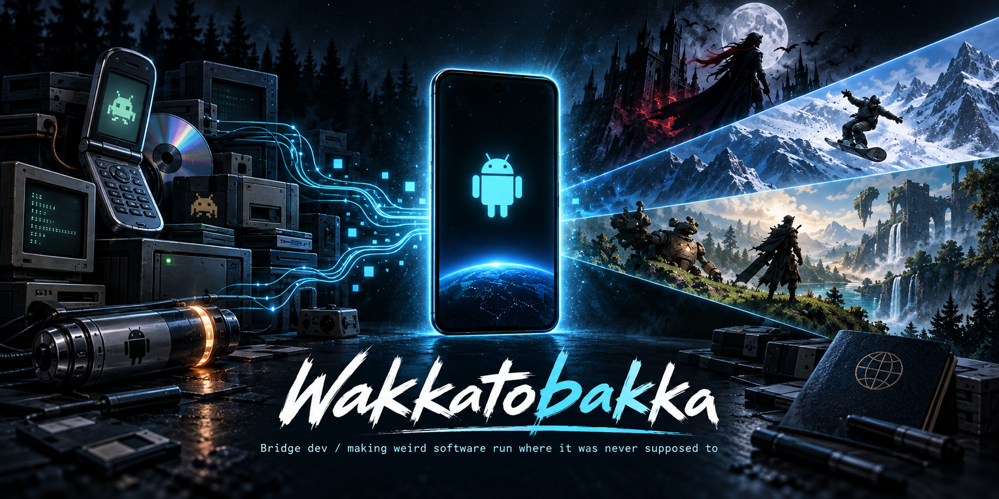

Qualcomm BREW catalog & mirror
A more organized home for the collection preserved on Internet Archive, with game listings, developer descriptions, and clearer edition details.
I'm Wakka. I get weird old phone games running on modern Android. Omni Player is where the pile comes together.
ONE PERSON. OLD GAMES. MANY RABBIT HOLES.
Gameplay from an individual bridge. Preview starts muted.
IN THE PUBLIC OMNI CATALOG
I got tired of juggling separate game bridges. Omni brings supported old mobile games together in one Android app, using their individual compatibility bridges.
You supply the original game files. Load the matching game file, pick it from your library, and play.
ANDROID 11+ / ARM64 · GAME FILES SUPPLIED BY YOU
Public beta downloads & update notes ↗
Looking for the game files? Pick a title from the Public Pile for the matching edition, filenames and source links.
Loading the game guide…
No matches in this catalog. Try another title or platform.
Source links and exact editions come from the same maintained game guide as GitHub. Matching listings and missing source records are labelled. Public builds are betas; bugs and progression blockers may remain.
Dedicated Android apps for individual games. Each project has its own releases, setup instructions, and notes.
Final Fantasy VII: Dirge of Cerberus — Lost Episode.
Open project & downloads ↗Devil May Cry: DeadShot. Dante's flip-phone outing.
Open project & downloads ↗Cloud's back on the slopes, on modern Android.
Open project & downloads ↗Mega Man: Rush Marine. A very small submarine rabbit hole.
Open project & downloads ↗More games are brought together in Omni Player. The original game files are supplied separately.
Things that grew out of making the work easier to build, carry into another chat, and actually use.
Keep the project, files, build tools, decisions, and next action together when moving between AI chats.
02Give a chat with code execution the Android build tools it needs. Direct, test, and iterate from there.
03Carry a project's purpose, decisions, and current state into the next conversation.
04Apply supported retro-game patches locally in a browser. Game in, patch in, KABOOMY.

“Okay, but why can't we make it work?”
Bridge dev / professional maker-of-weird-shit.
I like taking software that was considered dead or obsolete and figuring out how to get it running anyway. I work with AI by directing, testing, and iterating, around my job and family.
I've started calling the wider collection Legion. Beyond the public Omni catalog, there's a growing private testing pile, including N-Gage bridges. I'm working on playability, consistent controls, and making future updates easier to share.
Mostly, I just think old things are neat. Getting other people playing them is part of the fun.
This builds on the work of preservation, translation, and runtime projects. The N-Gage bridges use EKA2L1. Project pages carry the relevant credits and component notices.
Future plans. These features aren't available yet.
A more organized home for the collection preserved on Internet Archive, with game listings, developer descriptions, and clearer edition details.
Guidance and tools for investigating a game, developing and testing a compatible bridge, and adding it to your own private Omni. So your next rabbit hole doesn't have to wait on me.